Technical information
 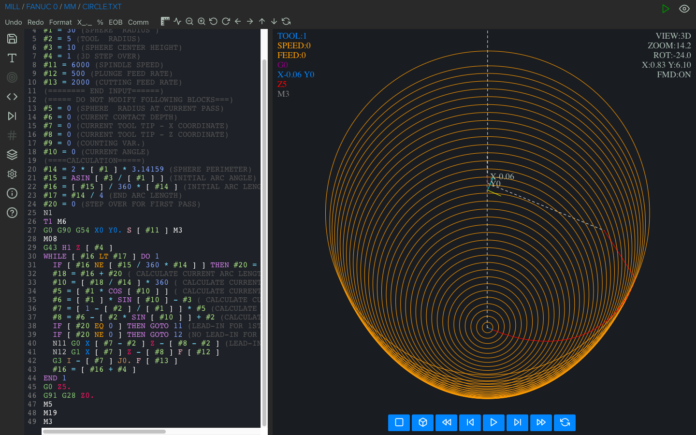
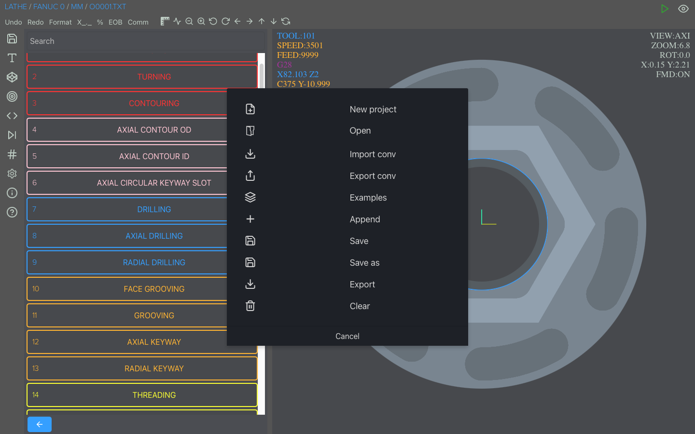
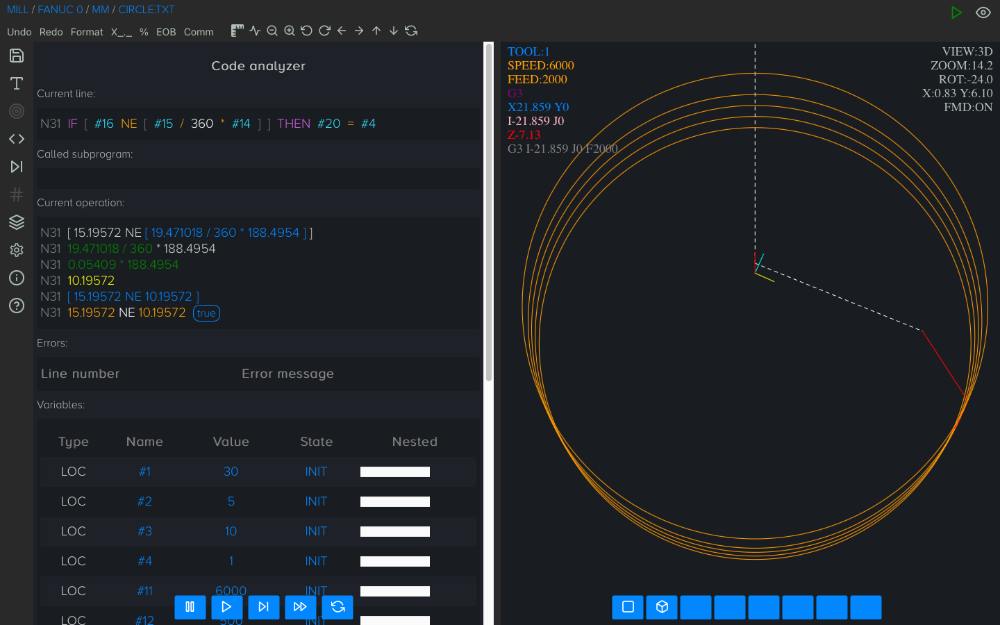
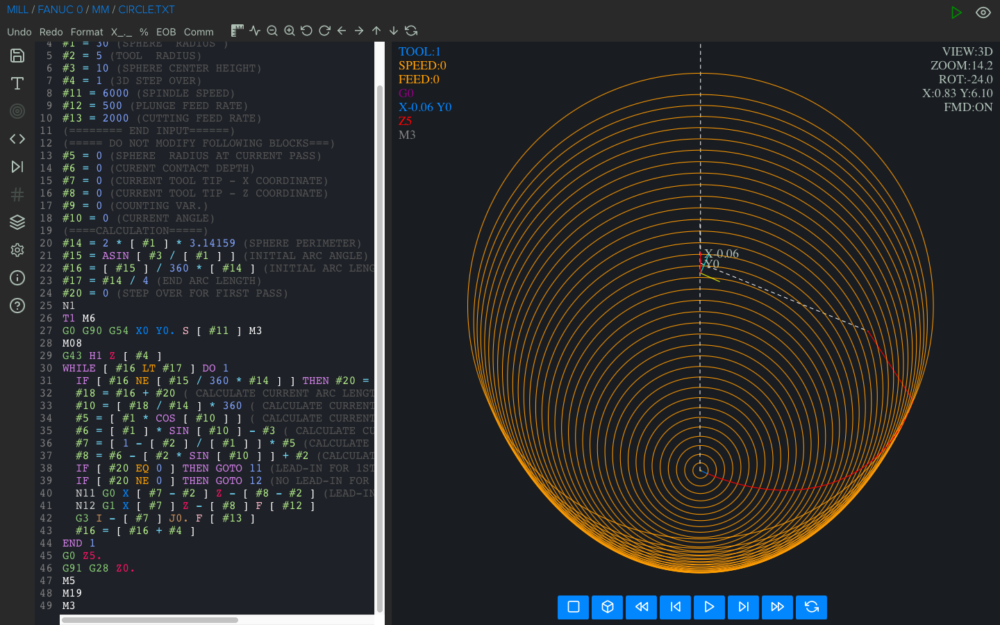
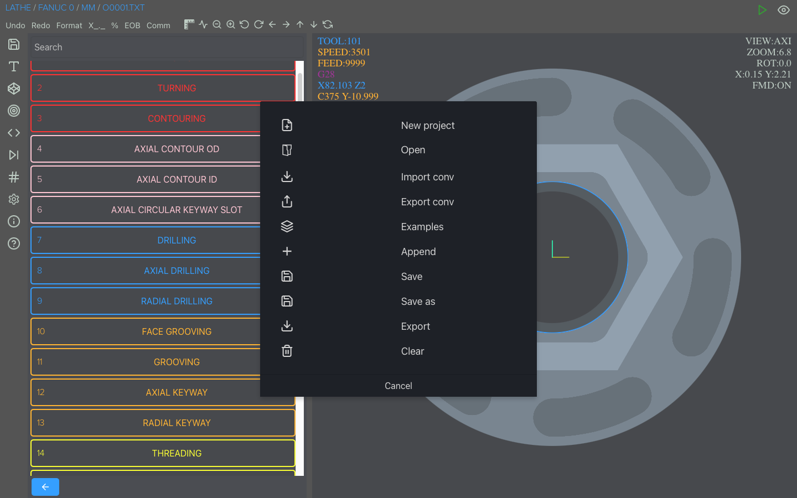
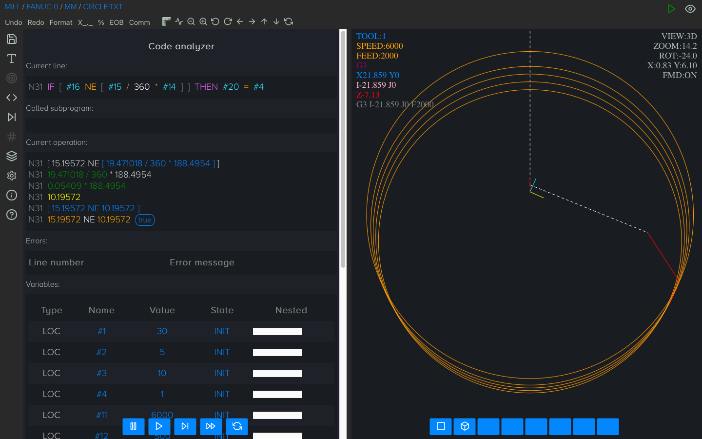
 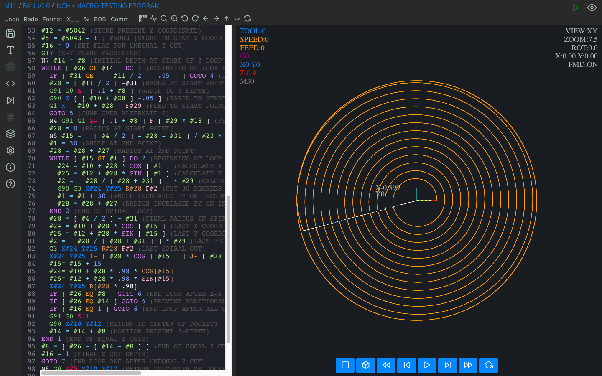
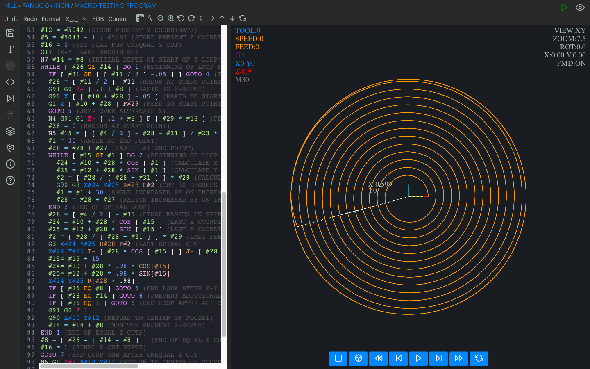
 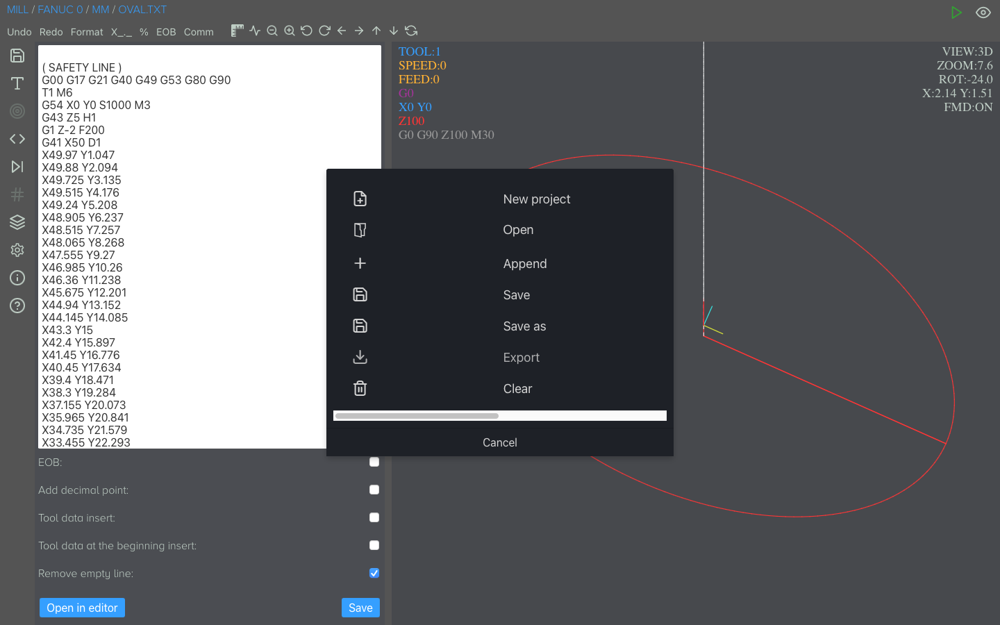
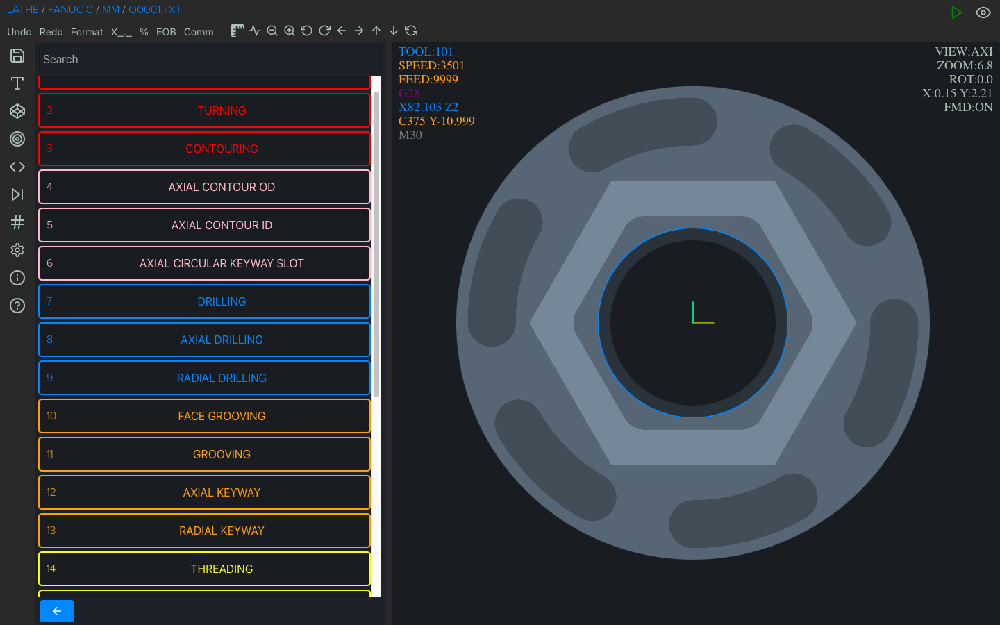
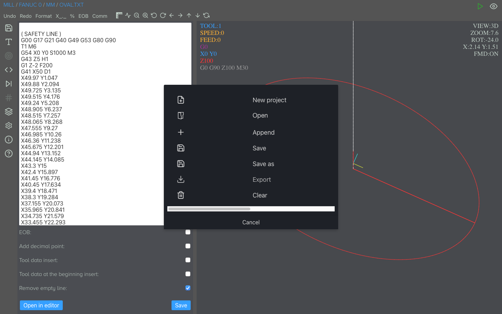
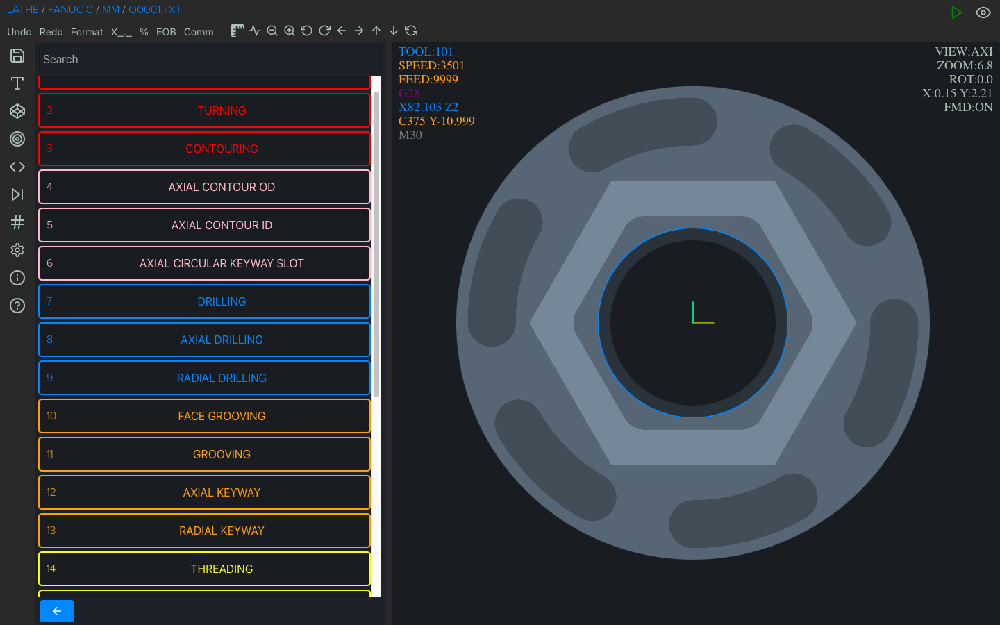


Milling conversational programming:
- circular face milling
- rectangular face milling
- circular pocket
- rectangular pocket
- circular shoulder
- rectangular shoulder
- circular grooving
- rectangular grooving
- helical boring
- spot drilling
- dwell drilling
- peck drilling
- thread milling
- tapping
- code snippet
Turning conversational programming:
- facing
- turning
- contouring
- axial contour OD
- axial contour ID
- axial cicular keyway slot
- drilling
- axial drilling
- radial drilling
- face grooving
- grooving
- axial keyway
- radial keyway
- threading
- tapping
- axial tapping
- radial tapping
- reamimg
- axial reamimg
- radial reamimg
- boring
- parting
- code snippet
Viewport (simulator/graphics) information:
- 3D tool path (mill)
- simulation (play, play fast, stop, next, reset, previous, rewind)
- mill - 5 view modes (3D, XY, XY removal, XZ, YZ)
- lathe - 2 view modes (radial and axial removal view)
- measuring an object / coordinates
- zoom
- ruler
- shift image
- show / hide rapid movement
- metric / imperial mode
- 3 themes (dark, bright, black & white)
Lathe cycles support:
- G28, G30 and G53(home position)
- G70 finishing cycle
- G71 rough machining cycle
- G72 facing cycle
- G73 pattern repetition cycle
- G74 face grooving cycle
- G75 grooving cycle
- G76/G78 threading cycle
- G90 turning cycle
- G92 threading cycle
- G94 facing cycle
- G32/G33 thread cutting (straight and tapered)
G-code/Fanuc/Haas/Mazak ISO support:
- absolute, incremental and polar mode
- G98 retract to initial Z value
- G99 retract to R value
- M98 subprogram (multiple formats)
- repeat canned cycle (L and K)
- circular interpolation supported by using (I, J, K or R)
Fanuc/Haas support:
- G16 polar coordinate
- G51 scaling
- G52 local work shift
- G68 coordinate system rotation
Haas support:
- G70 Bolt Hole Circle
- G71 Bolt Hole Arc
- G72 Bolt Holes Along an Angle
Macro (Fanuc Custom Macro B/Haas/Centroid) support:
- new faster macro interpreter (Lightning) for advanced macro programs
- keywords: IF, THEN (or TH), GOTO, WHILE (or WH), DO, END, ELSE, DPRNT, FOPEN, FCLOS
- comparison operators (FANUC/HAAS): EQ, LT, LE, GT, GE, NE
- comparison operators (CENTROID):
== or EQ, < OR LT, <= or LE, > or GT, >= or GE, != or NE - G65/G66/G66.1 macro subprogram call
- math functions supported: sin, cos, tan, asin, acos, atan, sqrt, abs, round, fix, fup, ln, exp, pow
- local, common variables and some of the most popular system variables
- support for both syntax FANUC/HAAS and CENTROID
IF [ #100 EQ 200 ] THEN GOTO 15 (FANUC MACRO B SYNTAX)
IF #100 == 200 THEN GOTO 15 ELSE GOTO 55 (CENTROID SYNTAX)
Debugger:
- assigned and created variables
- called subroutine and nesting level
- math and logical calculations in line
- for IF and WHILE statement shows the actual value (true or false)
Advanced calculator:
- use of variables (including system ones)
- use of logical and arithmetic operators (as in Fanuc Macro B or Centroid)
- using functions (same as Fanuc Macro B)
- supports Fanuc Macro B and Centroid syntax
Code editor:
- code highlighting
- formatting / code indentation
- commenting and uncommenting a piece of code
- undo/redo
- adding/removing EOB
- adding/removing %
Program export:
- code compressing
- removing empty lines
- adding decimal point
- adding automatically information about the tool used (at the beginning of the program as before calling it)
- adding line number
- removing original line number
- adding safety line
- auto adding end of program (M30)
Files:
- new project
- open file (opening multiple files at once)
- append(to add a subroutine locally)
- import conversational program
- export conversational program
- examples
- save
- save as
- export (export macro program as a pure g code program)
- share
- file extension supported:nc, cn, ncc, cnc, eia, txt, min, mpf
Input compatibility:
Fanuc 0, Fanuc 6, Fanuc 10, Fanuc 11, Fanuc 12, Fanuc 15, Fanuc 16, Fanuc 18, Fanuc 20, Fanuc 21,
Fanuc 30i,
Fanuc 31i, Fanuc 32i, Fanuc 35i, Haas, Centroid, Mazak ISO, Siemens 802D and others using CNC macros based on
Fanuc
Custom Macro B.
Output compatibility:
Same as input control selected, it also can be converted to Heidenhain, Sinumerik or other control upon
special request.
Languages:
English